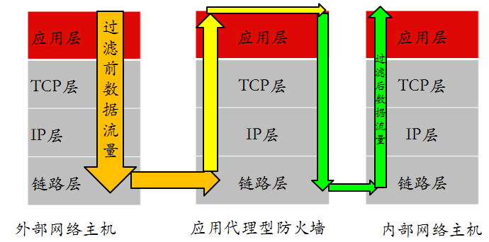
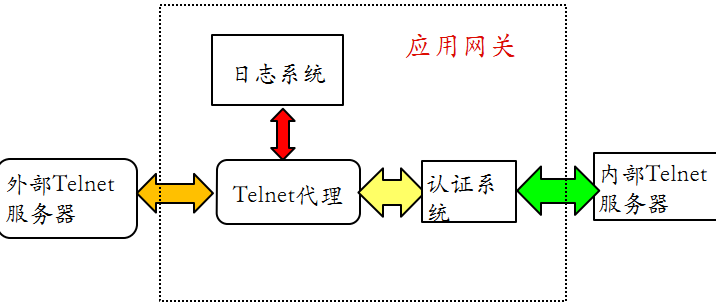

防火墙
防火墙=Firewall- 定义：在两个信任程度不同的网络之间设置的、用于加强访问控制的软硬件保护措施
- 基本逻辑：隔绝内外网
- 作用
- 防火墙能够强化安全策略，能够有效记录因特网上的活动，限制暴露用户点，是一个安全策略检查站
- 缺点
- 防外而不防内
- 管理和配置复杂度较高
- 如果配置不当容易导致安全漏洞
- 很难为用户在防火墙内外提供一致的安全策略
- 是一种粗粒度的访问控制
- 历史

UTM=Universal Threat Management=统一威胁管理- 整合了防火墙、入侵检测、入侵保护、防病毒、防垃圾邮件等综合功能
- 新一代的应用层防火墙 =
IPS
- 种类
- 按防护类型分
- 传统防火墙
- 应用层防火墙
- 防DDoS攻击防火墙
- 垃圾信息过滤防火墙
- 按防护类型分
- 发展动态和趋势
- 更强的性能
- 可扩展的结构和功能
- 缓存加速
- 统一认证接口
- 防
DDoS - 路由器
- 尽可能的简化安装和管理
- 积极适应持续变化的网络安全环境
- 防病毒和黑客
- 反垃圾信息
- 垃圾邮件
- 垃圾短信
- 垃圾电话
- 产品
- 开源
- Endian
- ModSecurity
- SmoothWall
- pfSense
- iptables
- m0n0wall
- 商业
- Juniper
- 华为
- 思科
- 联想网御神州
- 绿盟
- Safe3
- 开源
- 配置和应用
- 模式
路由模式- 概述
- 防火墙的各个安全区域位于不同的网段且防火墙自身有 IP 地址。子网之间的相互访问控制被隔离
- 架构
- 概述
透明模式- 别称：
网桥模式 - 概述
- 只区分内部网络和外部网络。不需要对防火墙进行 IP 设置。内网用户意识不到防火墙的存在，隐蔽性较好。降低了用户管理的复杂性
- 架构
- 别称：
混合模式- 概述
- 混合了路由模式和透明模式
- 在实际生活中应用比较广泛
- 在混合模式中，内网和服务器区域是透明模式，与外网间则是路由模式
- 架构
- 概述
- 模式


防火墙关键技术
包过滤技术
- 包过滤技术
- 逻辑架构
- 检查数据包的报头信息，依照过滤规则进行过滤
- 检查数据包内容
IP：源 IP 地址、目的 IP 地址、协议类型，选项字段等TCP：源端口、目标端口、标志段等UDP：源端口、目标端口ICMP：类型
- 检查数据包内容
- 优点
- 不需要内部网络用户做任何配置
- 对用户来说是完全透明的
- 过滤速度快，效率高
- 不需要内部网络用户做任何配置
- 缺点
- 不能进行数据内容级别的访问控制
- 一些应用协议也并不适合用数据报过滤
- 并且过滤规则的配置比较复杂，容易产生冲突和漏洞
- 逻辑架构

状态检测技术
- 状态检测技术
- 逻辑架构
- 检测逻辑
- 从收到的数据包中提取状态信息，并根据状态表进行判断
- 规则
- 如果该包属于已建立的连接状态，则跳过包过滤的规则检测直接交由内网主机
- 如果不是已建立的连接状态，则对其进行包过滤，依照规则进行操作
- 状态表
- 状态检测技术为每一个会话连接建立状态信息，并对其维护，利用这些状态信息对数据包进行过滤
- 状态表是动态建立的，可以实现对一些复杂协议建立的临时端口进行有效的管理
动态状态表是状态检测防火墙的核心，利用其可以实现比包过滤防火墙更强的控制访问能力
- 规则
- 状态检测技术基本流程图
- 缺点
- 没有对数据包内容进行检测
- 不能进行数据内容级别的控制
- 由于允许外网主机与内网主机直接连接，增加了内网主机被外部攻击者直接攻击的风险
- 没有对数据包内容进行检测
- 从收到的数据包中提取状态信息，并根据状态表进行判断
- 逻辑架构


代理服务技术
- 代理服务技术
- 应用级代理 逻辑
- 
- 检测逻辑
- 当接收到客户端发出的连接请求后，应用代理检查客户的源和目的 IP 地址，并依据事先设定的过滤规则决定是否允许该连接请求
- 如果允许该连接请求，进行客户身份识别
- 否则，则阻断该连接请求
- 通过身份识别后，应用代理建立该连接请求的连接，并根据过滤规则传递和过滤该连接之间的通信数据
- 当关闭连接后，应用代理关闭对应的另一方连接，并将这次的连接记录在日志内
- 当接收到客户端发出的连接请求后，应用代理检查客户的源和目的 IP 地址，并依据事先设定的过滤规则决定是否允许该连接请求
- 举例
- Telnet
- 
- Telnet
- 优点
- 内部网络的拓扑、IP 地址等被代理防火墙屏蔽，能有效实现内外网络的隔离
- 具有强鉴别和细粒度日志能力
- 支持用户身份识别，实现用户级的安全
- 能进行数据内容的检查
- 实现基于内容的过滤，对通信进行严密的监控
- 缺点
- 性能低，速度慢
- 代理服务的额外处理请求降低了过滤性能，导致其过滤速度比包过滤器处理速度慢
- 需要为每一种应用服务编写代理软件模块，提供的服务数目有限
- 对操作系统的依赖程度高，容易因操作系统和应用软件的缺陷而受到攻击
- 性能低，速度慢
- 应用级代理 逻辑